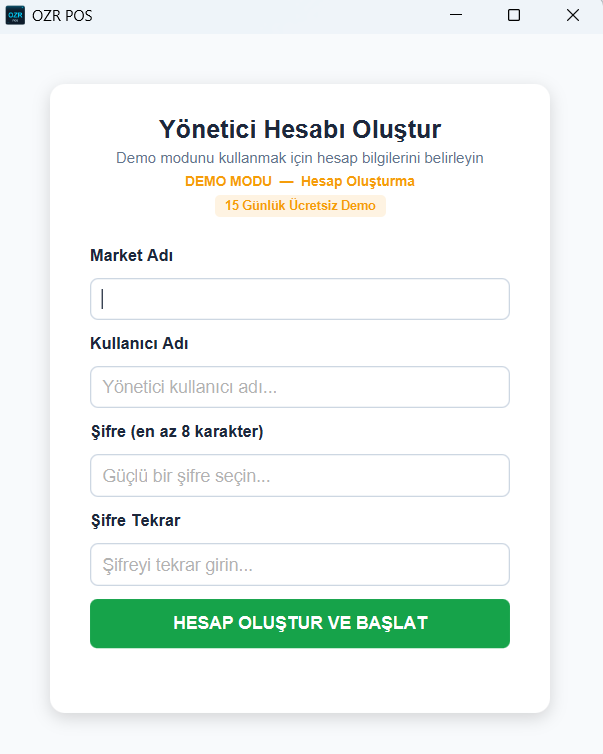
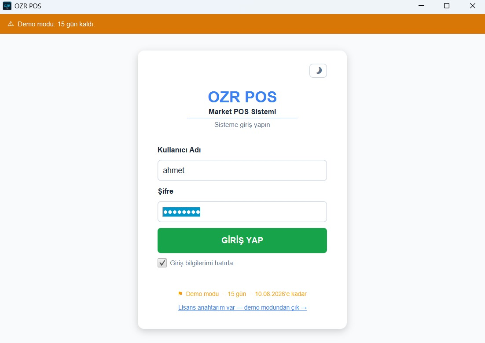

Barkodu okutun, satışı kapatın. OZR POS kasanızı hızlandırır, veresiye defterinizi tutar, verilerinizi her gün otomatik yedekler ve internet kesildiğinde bile çalışmaya devam eder.
✓ Kredi kartı gerekmez · ✓ 5 dakikada kurulur · ✓ Kurulum desteği bizden

OZR POS bakkal ve market işletmecileriyle birlikte geliştirildi. Karmaşık menüler yok — kasiyeriniz ilk gün öğrenir.
Okut, ürün sepette. Çoklu adet için 3*, ekmek-buz gibi barkodsuz ürünler için hızlı ürün tuşları; tam parada F5-F5 ile satış kapanır.
Aynı anda 3 müşterinin sepetini ayrı tutun. Müşteri "kartımı unuttum" mu dedi? Ctrl+2 ile sıradakine geçin.
Kağıt defter bitti. F9 ile sepeti müşterinin hesabına yazın, borç ödemesini aynı pencereden alın; fişte önceki ve toplam borç yazar.
Nasıl çalışır →Barkodu okunmayan ürünü F7 ile adından bulun. Müşteri "bu kaç para?" derse F8 — fiyat görünür, sepete eklenmez.
Termal yazıcınızdan market adınız, adresiniz ve alt mesajınızla bilgi fişi yazdırın. Yazıcıyı seçin, test fişini basın — hazır.
Bugün, bu hafta, bu ay veya istediğiniz tarih aralığı: ciro, nakit/kart ayrımı, satış sayısı, veresiye satış ve tahsilat, toplam açık veresiye.
Her kasiyere ayrı giriş şifresi; yönetim ekranına yalnızca siz girersiniz. Ayrılan kasiyerin kaydını kapatın, satış geçmişi kaybolmaz.
Her gün otomatik yedek, ürün ve veresiye değişikliklerinde anlık ek yedek. Veritabanı şifreli, yedekler AES-256 ile korunur; veriler kendi bilgisayarınızda kalır.
Kağıt defter kaybolur, yazı okunmaz, hesap tutmaz. OZR POS borcu satışla birlikte kaydeder, fişe yazar ve defteri kendiliğinden yedekler.
Temsili fiş görünümü — müşteriniz borcunu her alışverişte görür.
Gereksiz hiçbir buton yok. Kasiyeriniz eğitim almadan kullanmaya başlar.


Kurulum, kısayol tuşları, veresiye, ürün yükleme, yedekleme ve sorun giderme — hepsi tek sayfada.
Kredi kartı istemeyiz, otomatik ödeme almayız. Süreç ekran ekran tam olarak böyle işler:

Kurulumdan sonraki ilk ekranda iki seçenek var: elinizde davetiye kodu varsa girin, yoksa tek tıkla demoyu başlatın. Kart bilgisi istemiyoruz.

30 saniye sürer. Market adınızı, kullanıcı adınızı ve şifrenizi belirleyin — kayıt tamamlanır tamamlanmaz kasaya geçip satışa başlayabilirsiniz.

Kalan gün sayısı her girişte üstte görünür — sürpriz kısıtlama veya gizli özellik yok. Tüm özellikler, tüm ürün ve satış kapasitesiyle tam çalışır.

WhatsApp'tan bize ulaşın, size özel davetiye kodunuzu iletelim. Kodu bu ekrana girin — verileriniz aynen kalır, kaldığınız yerden devam edersiniz.
15 gün boyunca tüm özellikler ücretsiz ve sınırsız. Beğenmezseniz silersiniz, kimse sizi aramaz.
Demo kurulumu, fiyat teklifi veya cihaz uyumluluğu — ne olursa olsun yazın, aynı gün dönüş yapalım.
veya arayın: 📞